Kyle Parker Cunningham · proof sheets · not for reproduction
Contact sheet
Subjectthe oeuvre
Rolls3 of 16
Frames67
Markedgrease pencil
EditorKPC
A contact sheet is the least flattering way to show work and the most honest: everything at the same size, in the order it was shot, including the frames that did not come off. The marks are the argument. A circle means print it. A cross means no. A rectangle means the painting is in there somewhere but not at that crop.
ROLL 12 · KODAK TRI-X 400 · 2018the year something opened · 25 frames

1A
120 Volts
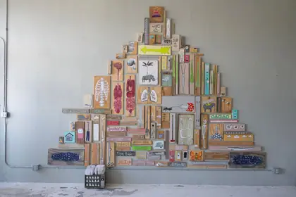
2A
A. Muscaria

3A
Aeropress

4A
Airdrop

5A
Alligator Juniper
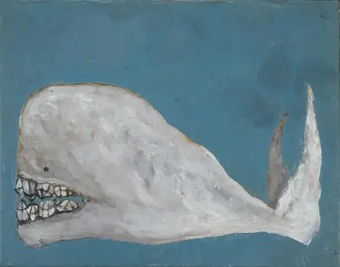
6A
Crystal Tooth Whale

7A
Deep Sea

8A
Elephant Mask
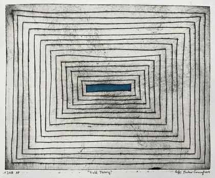
9A
Field Theory AP

10A
Flicker Rhino
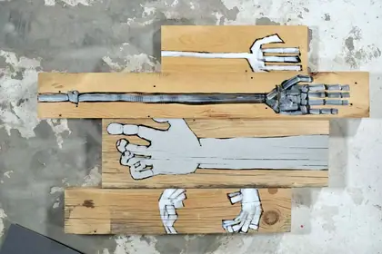
11A
Hands

12A
Kite

13A
Lunarem
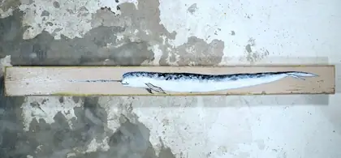
14A
Narwhal
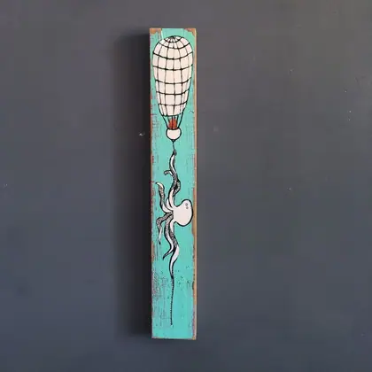
15A
Octobat
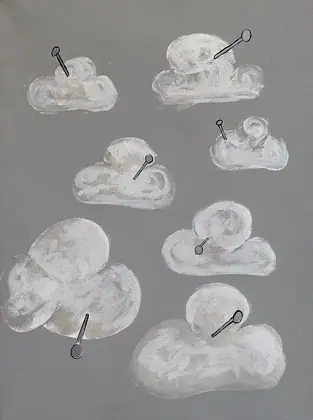
16A
Pinned

17A
Prickly Pear
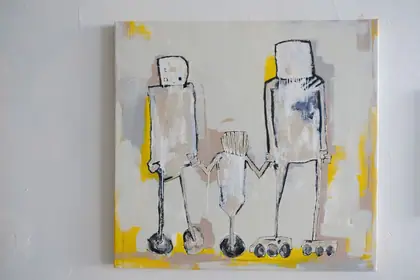
18A
Robot Family
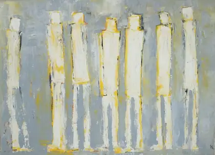
19A
Seven

20A
Space Worm
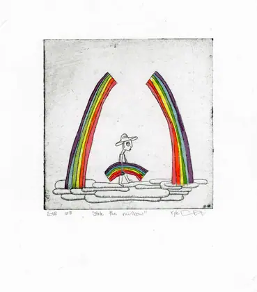
21A
Stole the Rainbow
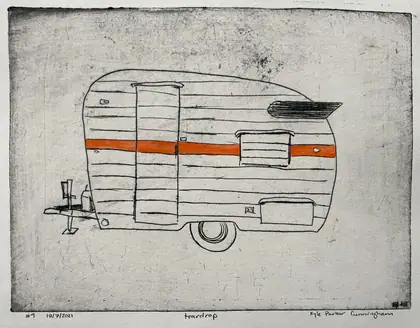
22A
Teardrop

23A
Tecate

24A
Three Blue Corn
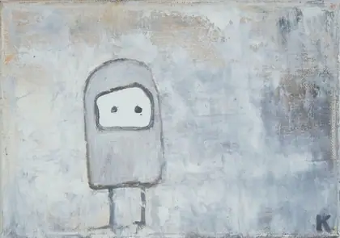
25A
Thursday
ROLL 15 · KODAK TRI-X 400 · 2021solarpunk at full strength · 25 frames
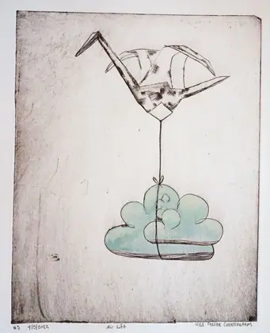
1A
airlift
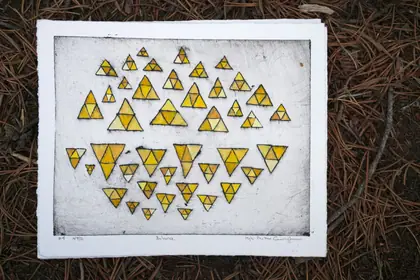
2A
balance

3A
bison robotics

4A
butterfly conundrum

5A
cyclic repetition

6A
cydney and val
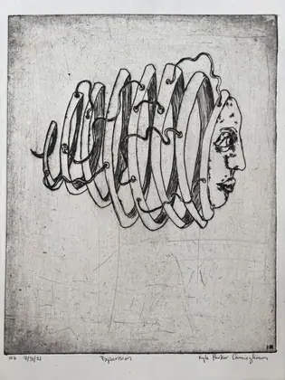
7A
expansion drypoint

8A
fall 2021
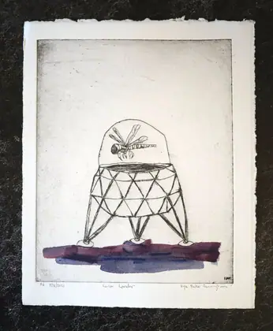
9A
lunar lander
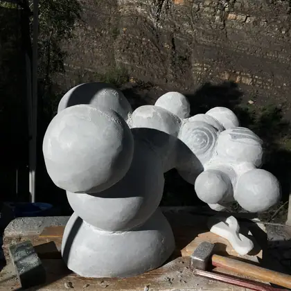
10A
molecule
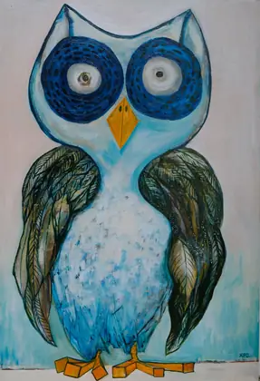
11A
owl

12A
paper neck giraffes

13A
Path Through the Autumn Leaves

14A
pink and yellow
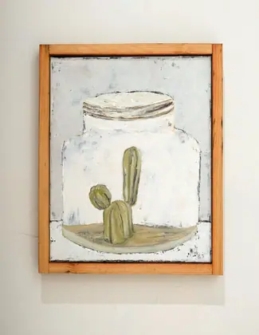
15A
preservation cactus

16A
rhino radar
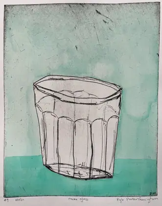
17A
rocks glass

18A
stole the rainbow
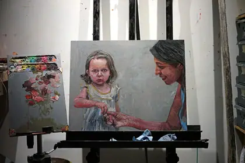
19A
the berry picker

20A
the mother bear

21A
there once was ice here

22A
transition

23A
transplanter
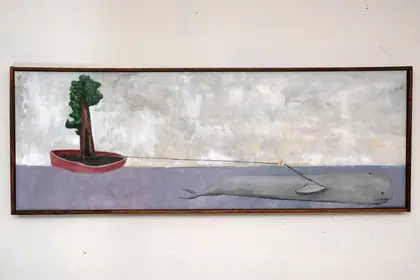
24A
tugboat whale sequoia

25A
vacation
ROLL 18 · KODAK TRI-X 400 · 2024the memory of atmosphere · 19 frames

1A
above the clouds

2A
alpenglow at mineral creek with the adults after the babies have gone to sleep

3A
bottled lightning

4A
does math control nature?

5A
equilateral equilibrium

6A
felt and lived

7A
low angle sun rays

8A
orbits (plankton dreaming of a sedimentary afterlife)

9A
out there, on the horizon, a solitary cloud

10A
pollen and larvae
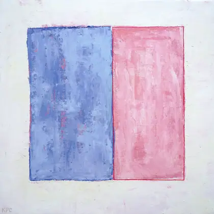
11A
separate, yet delicate, representations of existence

12A
symbologies intertwine electronically

13A
the algebra of water vapor

14A
the atmosphere's electric finger

15A
the river in the sky

16A
towers

17A
triangular circles

18A
twenty-one years

19A
two squared
◯ printed — the work was returned to in a later year✗ not this one▭ crop — part of a standing investigationmarks derived from the catalogue's own relations, not from taste